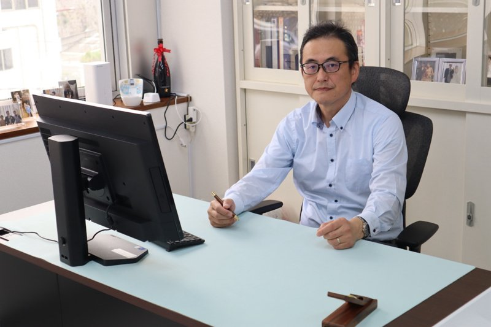
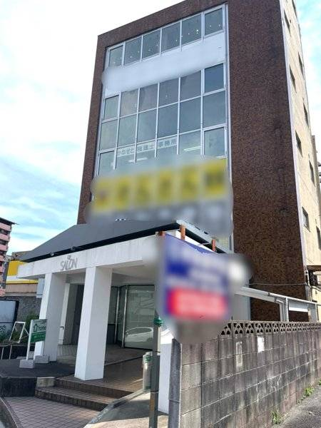
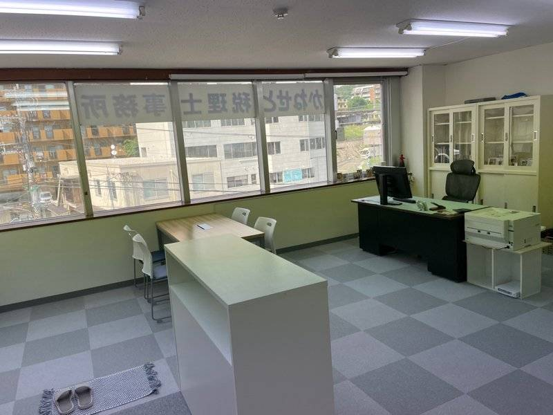

代表税理士挨拶

代表税理士の金瀬戸です。
私は、長年にわたり税務署に勤務し、統括国税調査官としての職務を経て退官後、税理士として登録いたしました。
税務調査を「する側」と「受ける側」双方の視点を持ち合わせていることが私の強みです。
その経験を活かし、丁寧かつ的確な税務サポートを提供いたします。
業務案内
申告内容の誤りを防ぎ、税務リスクを最小限に。複雑な控除や計算もお任せください。
税務署の視点を理解しているからこそ、調査の論点や対応のコツまでご案内できます。
税務だけでなく、経営判断や資金調達の相談にも応じます。毎月の定例支援も可能です。
円満な相続を支えるため、事前の計画から申告・名義変更までトータルサポートします。
開業届・青色申告承認申請書からクラウド会計まで。副業やフリーランスの方も歓迎。
設立前の法人形態の選択から、税務署届出、資金繰りの計画まで丁寧にサポートします。
事務所の様子
🏢 外観
🖥️ 内観
お問い合わせ
📞 電話：070-6926-2670
📧 メール：atsushikaneseto@gmail.com
奈良県生駒市山崎町4-10 サンアイビル3階
アクセス
〒630-0252 奈良県生駒市山崎町4-10 サンアイビル3階